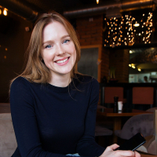
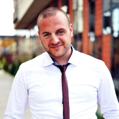

About the Martini Office Institute
We are a Groningen based non-profit organisation that brings together visionaries in the field of academics, business and communication.
We started in June 2022 and have grown to an organisation of 4 staff-members and several volunteers.
These permanent staff-members are:
Susanna Walkner
Director at 050Talk.nl. She has a large social network and attends every online event that features Groningen.
People love her enthusiasm for Groningen and its beauty. Besides being director, she is also a part-time photographer.
In her local prize-winning photos, you can see her keen eye for detail.
Debbie Flamé
Debs is a full-time lecturer at the RUG. Not a day is the same for her and that is what she loves about his job.
She is also a well-known person locally, and has a flair to attract publicity and focus this on her projects.

Vicki Montag
In Vicki's every day life she is, besides a lecturer at the Faculty of Arts, an artist who is very active on social media. Her Insta account has more than 17.000 followers.
In her posts she refelcts on art pieces and reviews online events and expositions.

Michael H. Winter
Michael is our latest staff member and is mostly interested in the technical aspects of online communication. As a Communication student he began a YouTube channel, reviewing gadgets, which now has more than 4.000 subscribers.
©With CamFlix it clicks, Where ideas come to life 14/06/2024
Chamber of Commerce number: 24.1.33.13.1